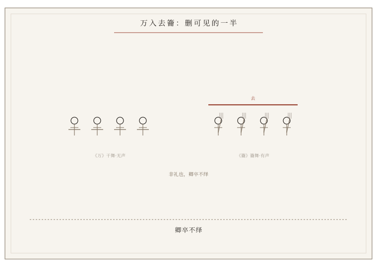

檀弓下 · 四·五十六 · 第 381 课
仲遂卒于垂，壬午犹绎，《万》入去《籥》。仲尼曰：「非礼也，卿卒不绎。」
说什么事：鲁卿仲遂卒于垂。次日壬午，鲁国仍举行绎祭；行《万》舞时去掉了《籥》舞。孔子说：「这不合礼。卿卒，不当绎。」
落在哪一层：以「删一半」止不得。有所不忍，而止得不彻底。
为何编在此位：上节子废父之乱命，此节君留祭之半礼。一废一留，皆见「不全」之难。
【经】仲遂卒于垂，壬午犹绎，《万》入去《籥》。仲尼曰：「非礼也，卿卒不绎。」
【注】《春秋经》在宣八年。仲遂，鲁庄公之子东门襄仲。先日辛巳，有事于太庙，而仲遂卒，明日而绎非也。《万》，干舞也。《籥》，籥舞也。传曰：「去其有声者，废其无声者。」
【疏】此一节论卿卒重于绎祭之事。／此经所云者，《春秋经》文。案宣八年六月「辛巳，有事于大庙。仲遂卒于垂」是也。云「仲遂，鲁庄公之子东门襄仲」者，《世本》及《左传》文也。云「《万》，干舞也。《籥》，籥舞也」者，案宣八年《公羊传》云：「《万》者何？干舞也。《籥》者何？籥舞也。」《万》是执干而舞，武舞也，即《文王世子》云「春夏学干戈」是也。《籥》舞执羽吹籥而舞，文舞也，《文王世子》云「秋冬学羽籥」是也。云「传曰：去其有声者，废其无声者」，亦宣八年《公羊传》文。云「去其有声」，谓去《籥》舞，以吹籥有声故也。「废其无声」，谓废留《万》舞而不去，以《万》舞无声故也。《郑志》答张逸云：「废，置也。于去声者为废，谓废留不去也。」然郑引「《万》，干舞。《籥》，籥舞」，虽是传文，郑翦略其事，不全写传文，故于后始称「传曰：去其有声，废其无声」，以二句全是传文也。
仲遂 鲁庄公之子，东门襄仲，鲁卿。
垂 地名，仲遂卒处。
壬午 干支纪日。
绎 正祭之次日又祭，谓之绎。
《万》 干舞，执干而舞，武舞。
《籥》 籥舞，执羽吹籥而舞，文舞。
去 撤去。
有声者 吹籥发声之舞，即《籥》。
无声者 不发声之舞，即《万》。
卿卒不绎 卿死之日，不当举行绎祭。
仲遂卒于垂。壬午那天，鲁国仍然举行绎祭，行《万》舞时撤去了《籥》舞。孔子说：「这不合礼。卿卒，不当绎。」
此章记一次半途而止的改革。祭已开，人已死，于是删掉一半。
删掉的那一半，是有声音的那一半。
第一层 绎之重 绎者，正祭之次日又祭。
此祭不轻。 正祭已毕，次日照样行礼，是谓「余敬未尽」。
故当国有卿丧，此祭当废——不是改，是废。
第二层 「犹绎」二字 经用「犹」字，已含讥意。
「犹」者，本不当然而竟然。一字之中，是非已定。
第三层 删一半的做法 祭不可全废，又不能全行，于是删去《籥》而留《万》。
此一节最见人情之常态：不愿全废，故删一半，以求两全。
第四层 「去其有声者」：为何删有声的 《籥》有声，《万》无声。
删有声而留有形。 此一取舍，理由极浅：有声者会被人听见。
此一句最耐寻味：所删者不是「不合礼的那一半」，是「会被人发现的那一半」。
礼之失，往往不在行，而在「只改可见之处」。
第五层 「废」字之义 《郑志》答张逸：「废，置也。于去声者为废，谓废留不去也。」
同一个「废」字，于《籥》为去，于《万》为留。 一字两面，古汉语之活用，亦见当时人对「止」的理解：止其一部，非止其全。
第六层 仲尼之断：「非礼也」 孔子不说「删得不对」，说「不该绎」。
此一断，是把问题从「怎么删」拉回「该不该做」。 删一半仍是行，行则非礼。
此一层是《檀弓》对「折中」的态度：不当行之事，折中亦是行。
第七层 卿卒不绎之据 注云「先日辛巳，有事于太庙，而仲遂卒，明日而绎非也」。
事已起而行未毕，人已死而乐未停。 礼的难处正在此际：来不及全改，只能选取。
而孔子所立之则极简：卿卒则不绎。 一条线，不留余地。
与今日何干 今之机构遇变故，多取「删一半」之法：仪式照办，删去易被指摘的环节。
此章给一句：该停的事，停一半仍是没停。
| 左 | 右 |
|---|---|
| 仲遂卒于垂 | 卿丧 |
| 壬午犹绎 | 本不当而竟行 |
| 《万》入 | 武舞留 |
| 去《籥》 | 文舞撤 |
| 去其有声 | 删可见者 |
| 废其无声 | 留不可见者 |
| 非礼也 | 孔子之断 |
| 卿卒不绎 | 一条线 |
| 折中仍是行 | 全章之要 |
画庙庭中的一片方地，视点平视。地上左右各立一排舞者，每排四人，皆举手作舞。左排每人手中持一柄短干（以短横杆示意），杆头无饰；右排每人手中持一支羽籥（以细杆顶一簇短竖线示意）。右排之上画一道赭色粗横线压过，示此排被撤。两排之间留出一条空道。不画文字。赭色只用在压过右排的那道粗横线。
